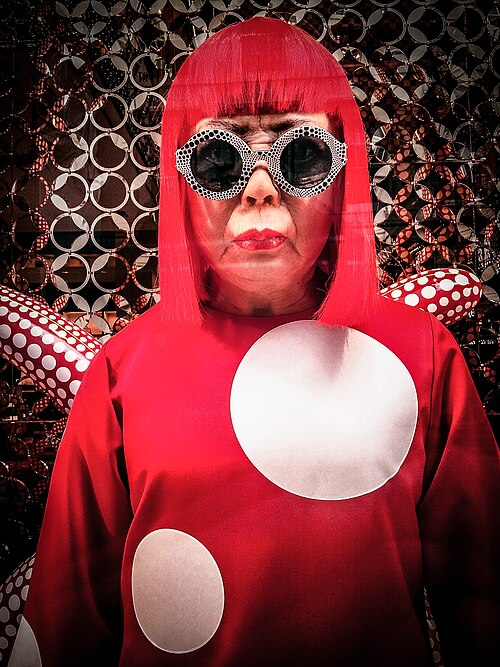

(Photo by Garry Knight, “Yayoi Kusama” (2012). Source: Flickr.)
● introduction:
-
Yayoi Kusama (草間 彌生, Kusama Yayoi; born 22 March 1929) is a contemporary Japanese artist who mainly makes sculptures and installations. She is also active in painting, performance, video art, fashion, poetry and novels. (Wikipedia, accessed 2025)
-
She is often called "the Queen of Wave Points" in the media and exhibition catalogue, and is widely regarded as one of the most important figures in Japanese contemporary art. (DailyArt Magazine, 2025)
-
Kusama formed a highly recognizable visual language, which originated from hallucinations, repetitions and psychological trauma she experienced in her life.
-
Kusama's superb artistic attempts include painting, sketching, collage, sculpture, performance, film, printmaking, installation and environmental art, as well as literature, fashion (most famous for her collaboration with Louis Vuitton in 2012 and 2023) and product design. (Victoria Miro, n.d)
● Major achievements
- Her most famous visual languages are “polka dots” and “Infinity Mirror Rooms”.
- Her works are collected and exhibited by major art galleries in the world, and she is one of the most influential female artists in the world.
- Through large-scale installation art and roving exhibitions, she promoted the immersive artistic experience, which made her a “contemporary art superstar” artist. (Myartbroker, 2025)
● Artistic Ideas / Themes
-
Illusion is the origin of her art: Yayoi Kusama has had hallucinations since she was a child, and she often sees the whole world covered with countless dots, flashes and repeated patterns. These hallucinations became the core foundation of her artistic language all her life. (Britannica, 2025)
-
Repetition, Dots, and Infinity: she uses dots, nets and endless repetition to express the ideas of infinity, cosmic vision and self-disappearance. (Artsy, 2018)
-
Feminism and Body Politics: Her works often explore women’s body, gender and gender politics, challenge the rules of male chauvinism, and express feminist ideas. (Myartbroker, 2025)
-
Psychological Experience & Art as Therapy: Kusama regards art as a way to cope with anxiety, psychological trauma and obsessive-compulsive symptoms. Repeated painting and immersion devices gave her psychological stability and release. (Kusama, 2011)
Reference:
-
Wikipedia. (accessed 2025) Yayoi Kusama.
Available at:
https://en.wikipedia.org/wiki/Yayoi_Kusama
(Accessed: 15 November 2025).
-
DailyArt Magazine. (2025) The Polka Dot Queen: Yayoi Kusama Through 10 Artworks.
Available at:
https://www.dailyartmagazine.com/yayoi-kusama-through-10-artworks/
(Accessed: 15 November 2025).
-
Knight, G. (2012) Yayoi Kusama. Flickr.
Available at:
https://www.flickr.com/photos/garryknight/8317472647
(Accessed: 15 November 2025).
-
Victoria Miro Gallery (n.d.) Yayoi Kusama.
Available at:
https://www.victoria-miro.com/artists/31-yayoi-kusama/
(Accessed: 15 November 2025).
-
MyArtBroker (n.d.) The Ultimate Guide to Yayoi Kusama: A–Z Facts.
Available at:
https://www.myartbroker.com/artist-yayoi-kusama/articles/ultimate-guide-yayoi-kusama-a-z-facts
(Accessed: 15 November 2025).
-
Britannica. (2025) Yayoi Kusama.
Available at:
https://www.britannica.com/biography/Yayoi-Kusama
(Accessed: 16 November 2025).
-
Artsy (2018) 6 Works That Explain Yayoi Kusama’s Rise to Art Stardom.
Available at:
https://www.artsy.net/article/artsy-editorial-6-works-explain-yayoi-kusamas-rise-art-stardom
(Accessed: 16 November 2025).